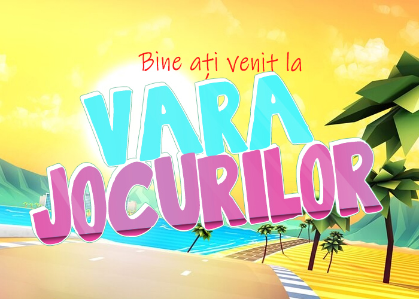

Vara Jocurilor
În loc de E3, anul acesta au loc o sumedenie de evenimente separate, majoritatea reunite sub umbrela IGN Summer of Gaming și Summer Game Fest al lui Geoff Keighley. Pentru că deja toată lumea își face câte un showcase, ne-am gândit să punem cap la cap calendarul de mai jos, ca să vă ajute să găsiți mai ușor evenimentele care vă interesează.
Calendarul va fi actualizat periodic, deci nu vă sfiiți să reveniți pentru a avea informații la zi. Dacă cumva am sărit peste vreun eveniment sau am omis detalii, trageți-ne de mânecă pe thread-ul de pe forum sau pe pagina noastră de facebook.
Orele de începere ale evenimentelor sunt pe fusul orar al României.

Evenimentele care urmează
Marți, 9 iunie
19:00Destiny 2: The Next Chapter. Va fi dezvăluit în premieră următorul capitol din Destiny 2. (Youtube, Twitch)
Miercuri, 10 iunie
23:45IGN Showcase - ziua întâi. Vor fi făcute patru anunțuri exclusive, dintre care două vor fi despre jocuri neanunțate încă de la Funcom și Merge Games. Pe lângă acestea vom avea noi trailere și gameplay videos pentru Beyond Blue, Chivalry 2, Pathfinder: Kingmaker, Wasteland 3, Mortal Shell, Yakuza: Like a Dragon, noul DLC Borderlands 3 și multe altele. (Youtube, Twitch).
Joi, 11 iunie
19:00The Escapist Showcase - o prezentare organizată de The Escapist în colaborare cu GOG, care va include peste 70 de jocuri indie. (Youtube, Twitch)23:00PS5 - The Future of Gaming - eveniment în care Sony ne va arăta în premieră jocurile care vor putea fi jucate pe Playstation 5 după lansarea acestuia la final de an. (Youtube, Twitch)00:15IGN Showcase - ziua a doua. Vom avea parte de două anunțuri în premieră și noutăți privind Stronghold: Warlords, XIII, Samurai Jack, Iron Oath și altele. (Youtube, Twitch).
Vineri, 12 iunie
00:50IGN Showcase - ziua a treia. În care vom primi, printre altele, noi informații despre 13 Sentinels, Castlestorm 2, Guilty Gears Strive, Total War: Troy și Everspace 2. (Youtube, Twitch).
Sâmbătă, 13 iunie
20:00Guerrilla Collective - festival digital de jocuri, la care vor participa producători precum SEGA, Funcom, Paradox, Larian și ZA/UM. Se va întinde pe încă două zile. (Twitch)21:00PC Gaming Show - show-ul cu jocuri de PC de la E3 din anii trecuți se întoarce într-o formulă de sine stătătoare. (Youtube, Twitch)00:00Future Games Show - prezentare găzduită de GamesRadar, cu peste 30 de jocuri de la Curve Digital, Deep Silver, Devolver Digital, Square Enix, Team17 și altele. (Youtube, Twitch)
Duminică, 14 iunie
??:??Guerrilla Collective - ziua a doua. (Twitch)
Luni, 15 iunie
??:??Guerrilla Collective - ziua a treia. (Twitch)22:30IGN Showcase - ziua a patra. Va fi anunțat un joc nou, va avea loc o prezentare Humble Bundle Indies Showcase, plus o mulțime de trailere și gameplay videos pentru Solasta Crown of the Magister, Corepunk, Destroy All Humans, SpongeBob SquarePants: Battle for Bikini Bottom, Scarlet Nexus, Ninjala, Vigor și altele. (Youtube, Twitch)
Marți, 16 iunie
19:00Upload VR Showcase - o prezentare în stilul Nintendo Direct, dar doar cu jocuri de VR. (Youtube)20:00Steam Game Festival: Summer Edition - un eveniment pe Steam care va trece în revistă jocurile care urmează să apară, cu demo-uri exclusive și alte noutăți. Va ține până pe 14 iunie.
Joi, 18 iunie
20:00D&D Live 2020 - eveniment de trei zile de sesiuni de D&D live cu vedete. În prima zi este planificat un „gameplay reveal” și „D&D Adventure and Product Reveal”. (Youtube)??:??IGN Showcase - ziua a cincea. Trailere și prezentări pentru The Falconeer, Drake Hollow, Fallout 76, și un joc neanunțat încă. Interviuri exclusive cu Chris Avellone și John & Brenda Romero. (Youtube, Twitch)02:00EA Play - prezentare a ultimelor noutăți despre jocurile EA. (Youtube, Twitch)
Luni, 22 iunie
18:00Developer Showcase: June - primul din cele două Developer Showcases organizate de Geoff Keighley.
Marți, 23 iunie
18:00New Game+ Expo - prezentare care va include trailere și anunțuri de la SEGA, Atlus și alți producători. (Youtube, Twitch)
Miercuri, 24 iunie
??:??Marvel’s Avengers: War Table - primul stream oficial cu imagini din viitorul joc Avengers.??:??IGN Showcase - ziua a șasea. Un reveal exclusiv al unui joc neanunțat încă, și câteva noutăți despre Dreamscaper, BioMutant, Shadow Arena, Cartel Tycoon și noul Sherlock Holmes de la Frogwares. (Youtube, Twitch)
Joi, 25 iunie
??:??IGN Showcase - ziua a șaptea. Gameplay video din Torchlight III și alte prezentări. (Youtube, Twitch)??:??Night City Wire - livestream CD Projekt despre Cyberpunk 2077.
Sâmbătă, 27 iunie
??:??BitSummit Gaiden - prezentare cu peste 70 de jocuri indie japoneze. (Twitch)
Sâmbătă, 11 iulie
??:??Tennocon 2020 - Digital Extremes vor oferi noutăți despre Warframe.
Duminică, 12 iulie
22:00Ubisoft Forward - prima conferință Ubisoft exclusiv digitală, care va înlocui show-ul pe care îl aveau de obicei la E3.
Luni, 20 iulie
??:??Developer Showcase: July - al doilea din cele două Developer Showcases organizate de Geoff Keighley.
Joi, 27 august
??:??Gamescom 2020 - Opening Night Live - prima seară de Gamescom, în care vor fi făcute principalele anunțuri. Va fi urmată de alte trei zile de evenimente digitale.
Evenimentele care au avut loc până acum
Sâmbătă, 6 iunie
- Indie Live Expo 2020, un eveniment de patru ore în care au fost prezentate noutăți de pe scena indie din Japonia.
- Indie Live Expo 2020: All the Announcements (DualShockers)
- Indie Live Expo 2020 Announces More Than 10 New Titles For Nintendo Switch (Geek Culture)
Miercuri, 27 mai
Marți, 26 mai
- A avut loc Wholesome Direct, o prezentare de 40 de minute cu peste 50 de jocuri indie cute & comfy.
- All the best news from Wholesome Direct (AllGamers)
- All 55 Games Games Featured In The "Wholesome Direct" (Gamespot)